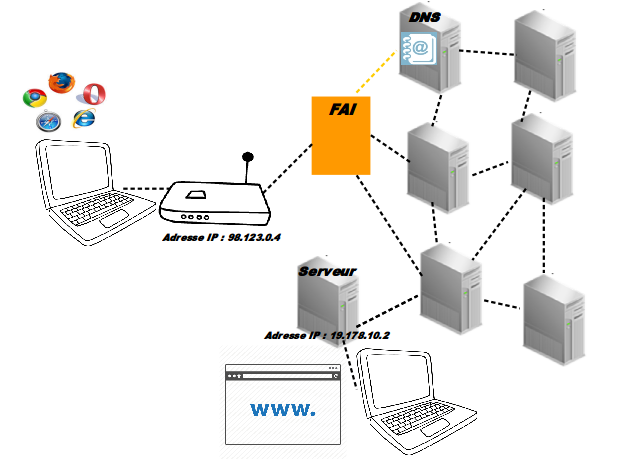
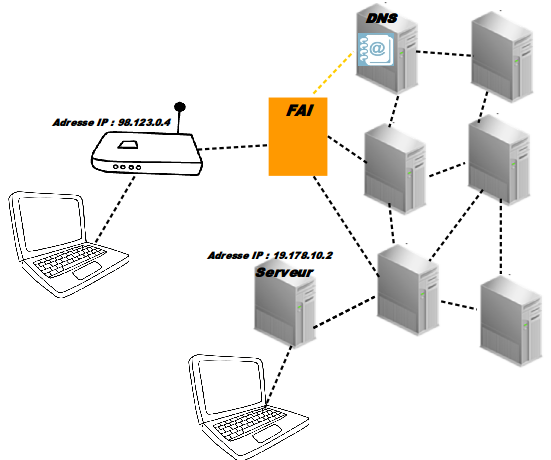
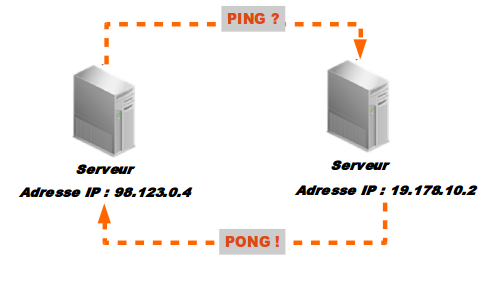

Introduction
à la fouille et l'analyse
des données du WEB
MASTER NUMI (2015)Elise Tancoigne et Constance de Quatrebarbes
Un peu de théorie et de contexte:
Internet
Les protocoles
HTTP et Le world wide web
Le site web
La page HTML
Les différentes "versions" du web
Les données nativement numériques
Showcase
Travaux Pratiques ! Lire le HTML - Fouiller une page web
Comment marche Internet?
⇩
De mon ordinateur à la page web
Avec un schema au tableau c'est mieux ...
⌂ Intranet - A la maison ⌂
Pour Internet, on a besoin de:
- Un ordinateur
- Un FAI :
(Fournisseur d'Accès Internet)- soit l'abonnemement auprès d'un opérateur téléphonique (offre analogique, GSM ou optique)
- et le routeur: la fameuse "box" Internet appelée aussi modem

le FAI qui nous donne accès à Internet
☁ Internet = InterconnectedNetwork ☁
- Un réseau mondial d'ordinateurs qui ont tous une adresse IP unique
- qui émettent et reçoivent des données sous forme de packets
- en suivant un même protocole de communication la "famille" TCP/IP

☁ Internet = InterconnectedNetwork ☁
- Un réseau mondial d'ordinateurs avec une adresse IP unique (c'est à dire une adresse physique)

☁ Internet = InterconnectedNetwork ☁
- Des serveurs qui émettent et reçoivent des données sous forme de packets
- en suivant un même protocole de communication
de la "famille" TCP/IP
soit une adresse IP et un ensemble de règle d'échanges des données - d'un émetteur
- d'un récepteur
- et un ensemble de règles minimales
- pour émettre et recevoir des données
- HTTP, HTTPS
- SMTP, POP3
- FTP, P2P
- SSH, TelNet
- UDP, IRC
- WIFI
- Bluetooth
- RFID
- GSM
- Cable optique
- Cable analogique
- Ethernet
- Token
- Etc etc etc...
- PING
online ping demo - Whois et Résolution de DNS
Whois Online Tool/ - Traceroute
Visual Traceroute tool - réseau de documents
- disponible à une adresse URL
- stockées sur des serveurs
- connectés à Internet
- Un client: ordinateur + navigateur
- Un serveur web: avec des fichiers statiques, des fichiers dynamiques + une base de données
- Le HTML est un langage de présentation avec des balises qui hiérarchisent le texte et affichent les hyperliens
- Le CSS permet l'affichage de couleurs et la mise en forme
- Le Javascript permet d'ajouter des animations*
- les appels en base de données
- la localisation des pages
- de faire un peu de calcul ...
- Le web 1.0:
un réseau de documents reliés entre eux par des hyperliens disponibles à une adresse - Le web 2.0:
Une révolution des usages avec l’ajout d’une couche dynamique: un réseau de personnesL’avènement des réseaux sociaux et la difficile définition de communauté
Un web de personnes et le profil social
- Le web 3.0?
Le web intelligent et les objets connectés: un réseau d’objets physiques Le web sémantique: un réseau de sens (données contextualisées et hiérarchisées) Le web augmenté: intelligence artificielle et Big Data: (la place de l'algorithme et des processus de traitement des données) - Pour Firefox et Chrome:
- Pour Safari:
- Presser la touche F12
- Presser les touches: Ctrl+⇧+I
- Dans le menu: Outils > Outils de développement
- Dans la barre de menus : Menu Développement > Afficher l'inspecteur web
- Si le menu Développement n’apparaît pas dans la barre des menus, choisissez Safari > Préférences, cliquez sur Avancées, puis cochez la case.
- Presser la touche F12
- Presser les touches: Ctrl+⇧+S
- Dans la barre de menus : Outils > Développment web > Debogeur
- Web 1.0:
- Web 2.0
- Web 3.0
- Protocoles:
HTTP, SMTP, POP, TelNet, UPNP, 3G, 4G+, etc. - Sources:
capteurs, serveurs, téléphones, GPS, satellites, etc. - Format:
HTML, XML, CSV, TXT, BDD, logs, etc. - Structure:
tableaux, arbres, graphes - Contenus:
mesures numériques, textes, relations, noeud et liens, clicks, code source de programme - Analyse de contenus textuels:
Sociologie des discours et analyse de l'opinionLinguistique computationnelle - Analyse des structures et des liens :
Sociologie des acteurs et des réseaux
Théorie des graphes - Analyse des usages:Sociologie des usagesStatistiques
- Analyse des traitements et méthodes:Sociologie des techniquesComputer Sciences

☎ Qu'est ce qu'un protocole ☎
Un protocole de communication est composé :
☞ un protocole de communication transforme ainsi un signal en information
☞ le protocole TCP/IP permet aux ordinateurs de communiquer entre eux
☎ Les Protocoles ☎
Il existe des dizaines de protocoles de communication différents qui utilisent le réseau Internet de la famille de TCP/IP
HyperText Transfer Protocol
Celui qui sert pour servir des pages web...
HTTP et le web
Depuis mon navigateur:
Le World Wide Web
- Le web est donc:
⇩
Architecture client/serveur
Les différents éléments d'un site web
- Fichiers statiques:
Les différents éléments d'un site web
Fichiers dynamiques:
Un langages de programmation (PHP, Ruby, .NET, Python, etc...) permet de construire:
Les différentes "versions" du Web
Une page HTML
<html>
<head>
<meta http-equiv="X-UA-Compatible" content="IE=edge">
<meta charset="utf-8">
<meta name="description" content="Une demonstration d'une page HTML (HyperText Markup Language).">
</head>
<body>
Hello World!
Ceci est le contenu d'une page html avec des balises
<div>Comme des boites qui organisent et présentent le contenu <div>
<h1> Ceci est un titre (h1 pour headline1) </h1>
<p> Ceci est un paragraphe </p>
<a href="http://info.cern.ch/hypertext/WWW/TheProject.html" >ceci est le lien hypertexte qui renvoie vers la première page HTML de l'histoire du web</p>
</body>
</html>
Voir le résultat dans le navigateur
Ctrl+ U
Ctrl+⇧+U
Alt+⌘+U
L'inspecteur Web
Dans votre navigateur, on trouve un outil qui permet d'inspecter le code source de la page et selectionner la balise qui vont intéresse Pour l'ouvrir
Chrome
Safari
Firefox
Sous Internet Explorer
Changez de navigateur!
Les différentes versions du web
Les données nativement numériques
- Les données nativement numériques
se caractérisent par leur diversité:
Les données nativement numériques
- Ces données impliquent aussi un type d'analyse particulier
et des méthodes empruntées à d'autres disciplines: